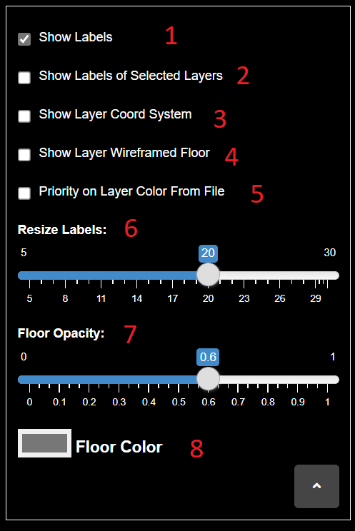
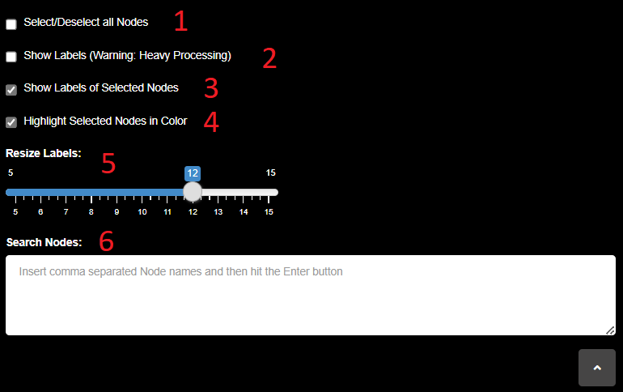

This is the action panel that allows the user to upload network data as well as export the network in its current state.
1. The Upload Network option allows the user to upload network data in the
Arena3Dweb format. This file consists of 5 columns with headers: SourceNode, TargetNode,
SourceLayer, TargetLayer and Weight. After the file is uploaded, the weight values are
mapped in a [0-1] range and relative opacities are assigned to the respective edges. Edge transparency represents
the weight. The heavier the weight, the higher the opacity. In the case of unweighted graphs, one can skip the
weight column. The column order in the input file is insignificant.
In its online version,
Arena3Dweb supports networks of less than 5000 edges. For larger networks, one can download and run
Arena3Dweb locally, from GitHub, and manually adjust the max_allowed_edges variable in app.R.
2. The Import Network from a saved object option allows the user to load
network data from an exported Arena3Dweb object state (see 5.).
3. The Upload NODE attributes option allows the user to upload annotation
data regarding the nodes of the current network view. Node and Layer name columns are necessary, while Color, Size,
Url and Description columns are optional. Color values must be annotated in hex codes. Once the node attributes have
been uploaded, links and descriptions can be accessed by right-mouse clicking on the corresponding nodes.
4. The Upload EDGE attributes option allows the user to upload annotation
data regarding the edges. Necessary columns: SourceNode, SourceLayer, TargetNode, TargetLayer and Color (in hex
code).
5. The Export Current View button allows the user to save the current view
in Arena3Dweb export format. The network can be restored by importing the relative saved object (see
2.).
Example of the Arena3Dweb Upload Network file format.
SourceNode SourceLayer TargetNode TargetLayer Weight Channel An Group1 Cn Group1 2 1 An Group1 Bn Group1 10 1 Bn Group1 Cn Group1 1 1 Cn Group1 Dn Group1 3 1 En Group2 Fn Group2 4 1 En Group2 Hn Group2 5 1 Fn Group2 Gn Group2 6 1 Gn Group2 Hn Group2 7 1 In Group3 Jn Group3 8 1 Bn Group1 Fn Group2 9 1 Dn Group1 Hn Group2 11 1 Dn Group1 In Group3 1 1 Cn Group1 Jn Group3 1 1 Hn Group2 In Group3 1 1 Hn Group2 Kn Group4 1 1 Kn Group4 Ln Group4 0.1 1 Kn Group4 Mn Group5 1 1 An Group1 Nn Group5 1 1 Kn Group4 On Group5 1 1 Kn Group4 Pn Group5 12 1 Kn Group4 Qn Group6 1 1 Kn Group4 Rn Group6 1 1 Kn Group4 Sn Group7 1 1 Kn Group4 Tn Group7 10 1
Example of the Arena3Dweb Upload NODE attributes file format. All columns are ommitable except from Node and Layer ones. Users do not need to mention every node, just the ones of interest.
Node Layer Color Size Url Description An Group1 #6b6a4c 1 This is a node's description. Bn Group1 #ccccff 2 Cn Group1 #254284 3 En Group2 4 https://www.frontiersin.org/articles/10.3389/fbioe.2020.00034/full Click the Link of this node to read our review on biological networks. Fn Group2 #7fe5f0 5 http://norma.pavlopouloslab.info/ Click the Link of this node to access our network annotation tool, NORMA. Gn Group2 1 In Group3 2 Dn Group1 #ffb3b3 http://nap.pavlopouloslab.info/ Hn Group2 3 Kn Group4 #e0f2f2 Qn Group6 #ff0067 Rn Group6 Sn Group7 #ffd8e8 Tn Group7 4
Example of the Arena3Dweb Upload EDGE attributes file format.
SourceNode SourceLayer TargetNode TargetLayer Color An Group1 Cn Group1 #4EFBE9 Bn Group1 Fn Group2 #D64EFB In Group3 Jn Group3 Kn Group4 Tn Group7 #4EFB7D
Example of the Arena3Dweb Import Network file format. Before importing, users can alter the Scene,
Layer, Node and/or Edge attributes manually.
Scene Pan attributes: Position X, Position Y, Scale, Background Color
Scene Sphere attributes: Rotation X, Rotation Y, Rotation Z
Layer attributes: Position X, Position Y, Position Z, Scale, Rotation X, Rotation Y, Rotation Z, Background
Color, Floor Color, Floor Width
Node attributes: Node Name, Node Group, Position X, Position Y, Position Z, Scale, Color, Url,
Description
Edge attributes: Edge, Weight, Color
SCENE_PAN 38 16 0.387420489 #1c0d1c SCENE_SPHERE 2.68086198337682 1.46785316045254 -2.48877171271573 LAYERS -1370.14285714286 0 0 1 0 0 0 #e4a801 991.428571428571 -913.428571428571 0 0 1 0 0 0 #e4a801 991.428571428571 -456.714285714286 0 0 1 0 0 0 #e4a801 991.428571428571 0 0 0 1 0 0 0 #e4a801 991.428571428571 456.714285714286 0 0 1 0 0 0 #e4a801 991.428571428571 913.428571428571 0 0 1 0 0 0 #e4a801 991.428571428571 1370.14285714286 0 0 1 0 0 0 #e4a801 991.428571428571 NODES An Group1 0 -129.65601687993 -406.46158770244 1 #6b6a4c This is a node. Cn Group1 0 -500.952380952381 1.13686837721616e-13 3 #254284 Bn Group1 0 -354.226825622975 297.550533523299 2 #ccccff Dn Group1 0 -483.882842502905 108.911054179141 1 #ffb3b3 http://nap.pavlopouloslab.info/ En Group2 0 129.656016879929 406.46158770244 4 #ce7d78 https://www.frontiersin.org/articles/10.3389/fbioe.2020.00034/full Click the Link of this node to read our review on biological networks. Fn Group2 0 -397.432244755419 256.16680932687 5 #7fe5f0 http://norma.pavlopouloslab.info/ Click the Link of this node to access our network annotation tool, NORMA. Hn Group2 0 -433.837487991062 -210.4 3 #ce7d78 Gn Group2 0 -129.65601687993 406.46158770244 1 #ce7d78 In Group3 0 -462.819651524702 -161.033188339229 2 #ea9e70 Jn Group3 0 -496.666663888213 -54.9254216861975 1 #ea9e70 Kn Group4 0 483.882842502904 -108.911054179141 1 #e0f2f2 Ln Group4 0 -304.960487293893 -333.843085594552 1 #a48a9e Mn Group5 0 -191.706176594321 -388.76850728075 1 #c6e1e8 Nn Group5 0 -65.3874067692832 -417.199997666099 1 #c6e1e8 On Group5 0 65.3874067692827 -417.199997666099 1 #c6e1e8 Pn Group5 0 191.706176594321 -388.76850728075 1 #c6e1e8 Qn Group6 0 304.960487293892 -333.843085594552 1 #ff0067 Rn Group6 0 397.432244755419 -256.16680932687 1 #648177 Sn Group7 0 462.819651524702 -161.03318833923 1 #ffd8e8 Tn Group7 0 496.666663888213 -54.9254216861983 4 #0d5ac1 EDGES An_Group1---Cn_Group1 0.243697478991597 #4EFBE9 An_Group1---Bn_Group1 0.848739495798319 #CFCFCF Bn_Group1---Cn_Group1 0.168067226890756 #CFCFCF Cn_Group1---Dn_Group1 0.319327731092437 #CFCFCF En_Group2---Fn_Group2 0.394957983193277 #CFCFCF En_Group2---Hn_Group2 0.470588235294118 #CFCFCF Fn_Group2---Gn_Group2 0.546218487394958 #CFCFCF Gn_Group2---Hn_Group2 0.621848739495798 #CFCFCF In_Group3---Jn_Group3 0.697478991596639 #CFCFCF Bn_Group1---Fn_Group2 0.773109243697479 #D64EFB Dn_Group1---Hn_Group2 0.92436974789916 #CFCFCF Dn_Group1---In_Group3 0.168067226890756 #CFCFCF Cn_Group1---Jn_Group3 0.168067226890756 #CFCFCF Hn_Group2---In_Group3 0.168067226890756 #CFCFCF Hn_Group2---Kn_Group4 0.168067226890756 #CFCFCF Kn_Group4---Ln_Group4 0.1 #CFCFCF Kn_Group4---Mn_Group5 0.168067226890756 #CFCFCF An_Group1---Nn_Group5 0.168067226890756 #CFCFCF Kn_Group4---On_Group5 0.168067226890756 #CFCFCF Kn_Group4---Pn_Group5 1 #CFCFCF Kn_Group4---Qn_Group6 0.168067226890756 #CFCFCF Kn_Group4---Rn_Group6 0.168067226890756 #CFCFCF Kn_Group4---Sn_Group7 0.168067226890756 #CFCFCF Kn_Group4---Tn_Group7 0.848739495798319 #4EFB7D END
To open Arena3Dweb from an external application, we offer an API that allows a POST request along with an Arena3Dweb JSON object. The API link is https://bib.fleming.gr/bib/api/arena3dweb. Don't forget to set the Header Content-Type to application/json. The JSON object must follow the Arena3Dweb export format as follows:
{
"scene": {
"position_x": "0",
"position_y": "0",
"scale": "0.6561",
"color": "#000000",
"rotation_x": "0.261799387799149",
"rotation_y": "0.261799387799149",
"rotation_z": "0.0872664625997165"
},
"layers": [
{
"name": "1",
"position_x": "-480",
"position_y": "0",
"position_z": "0",
"last_layer_scale": "1",
"rotation_x": "0",
"rotation_y": "0",
"rotation_z": "0",
"floor_current_color": "#777777",
"geometry_parameters_width": "947"
},
{
"name": "2",
"position_x": "480",
"position_y": "0",
"position_z": "0",
"last_layer_scale": "1",
"rotation_x": "0",
"rotation_y": "0",
"rotation_z": "0",
"floor_current_color": "#777777",
"geometry_parameters_width": "947"
}
],
"nodes": [
{
"name": "A",
"layer": "1",
"position_x": "0",
"position_y": "-410.179206860405",
"position_z": "87.2109740224067",
"scale": "1",
"color": "#e41a1c",
"url": "",
"descr": ""
},
{
"name": "B",
"layer": "1",
"position_x": "0",
"position_y": "244.693623604753",
"position_z": "-203.550830988035",
"scale": "1",
"color": "#e41a1c",
"url": "",
"descr": ""
},
{
"name": "C",
"layer": "2",
"position_x": "0",
"position_y": "-10.2895227857923",
"position_z": "361.274295019168",
"scale": "1",
"color": "#377eb8",
"url": "",
"descr": ""
}
],
"edges": [
{
"src": "A_1",
"trg": "B_1",
"opacity": "1",
"color": "#CFCFCF",
"channel": ""
},
{
"src": "A_1",
"trg": "C_2",
"opacity": "1",
"color": "#CFCFCF",
"channel": ""
}
],
"universal_label_color": "#FFFFFF",
"direction": false
}
The server then returns a JSON response with the url that links to the Arena3Dweb application, having the requested network loaded:
{
"url": "https://bib.fleming.gr:8084/app/arena3d?f=081436639JURotmRGQeFJ.json"
}
Random networks with different topologies mapped in 6 layers respectively:
The
example network in the Arena3Dweb format.
An
exported state file of this example.
Network example with 4 layers:
The
network file in Arena3Dweb input format.
An
exported state file of this example forming a cube in 3D space.
Another network example with 4 layers, accompanied by node and edge attribute files:
The
network file in Arena3Dweb input format.
Node attributes file for this example.
Edge attributes file for this example.
An
exported state file of this example.
SARS-CoV-2 Example:
A
Covid-19 network based on the work of Gordon et al., in the Arena3Dweb format.
Node attributes file for this example.
Edge attributes file for this example.
An
exported state file of this example.
GPCR Example:
The
network file in the Arena3Dweb format.
Node attributes file for this example.
Edge attributes file for this example.
An
exported state file of this example.
Scripts:
A Python script for parsing edgelist data into Arena3Dweb
format.
As an example, this input file:
Group1 A,B,C,D Group2 X,Y,Z
will be converted to this output file:
Group1 A Group1 B Group1 C Group1 D Group2 X Group2 Y Group2 Z
Run as: python filename.txt
The coverted file will be stored in a file named reformatted_filename.txt.
This control panel allows the user to select, deselect and hide layers, show layer-specific node labels, as well as apply layout algorithms and node scaling based on network metrics, on subgraphs of the network.
1. This consists of a group of 3 exclusive options for subgraph calculations, upon
which, layout algorithms (3) and node scaling (4) is
applied.
The Per Layer choice treats each selected layer (2) as an
individual network.
The All Selected Layers choice treats all selected Layers (2) as one, combined network. After the execution of a layout or scaling algorithm, nodes
are mapped back to their respective Layer. With this option, the application of force-directed layout algorithms
allows network alignment among the different layers.
The Local Layout option for the Selected Nodes Per
Layer choice allows layout and scaling algorithms to be applied on a selected sub-group of nodes, per each
selected layer respectively.
2. The Select/Deselect All Layers checkbox allows the user to quickly select
or deselect all available network layers. After the user uploads or imports a network, a grid of n x 3
checkboxes is created, where n is the number of network layers and 3 are the available actions for
each layer;
the 1st column allows the individual selection/deselection of layers,
the
2nd column allows the user to hide individual layers and their inter-layer connections
and the
3rd column allows the user to show node labels per layer.
3. A list of available layout algorithms of the igraph package, to apply on
selected layers (2) based on the execution mode of (1).
4. A list of available network metrics of the igraph package, used for
node-scaling, to apply on selected layers (2) based on the execution mode of option
(1).
Below, we briefly desribe the available layout algorithms (3).
Below, we briefly desribe the available network metrics for node scaling (4).
In this tab, the user has 2 scene-related options.
1. A checkbox that toggles the visibility of the scene coordinates system.
2. A ColorPicker for the background of the network. For bright background colors,
be sure to set higher opacity values for layer floors (Layer Actions tab) and edges (Edge Actions tab).
This control panel incorporates layer-related actions.

1. This checkbox allows the user to show or hide all layer labels.
2. This checkbox gives the option of showing the labels of selected layers only.
Option (1) has priority over this option.
3. This option toggles the coordinate systems -X (red), Y (green), Z (blue)- for
all layers.
4. This option allows an alternate visualization for layers floors, in wireframe
mode.
5. This slider resizes layer labels.
6. This slider changes layer opacities in [0-1].
7. This is a ColorPicker button for painting layer floors.
This control panel incorporates node-related actions.

1. This options allows the user to select/deselect all nodes. Selected nodes can
then be translated in 3D space via the Navigation Controls, and via the Layer Selection & Layouts
action tab can be either rearranged in a local layout or rescaled based on network metrics.
2. This option allows the user to view every node label. This is an option that
demands heavy processing power due to the constant redrawing of labels. Ensure that this is enabled only in small
networks and in combination with the 15FPS option of the FPS action tab.
3. This option allows viewing only the labels of selected nodes. Priority is given
in option (2) over this option.
4. This is an option that passes priority on uploaded node colors (via the
Upload NODE Attributes action of the File tab) over the default selected node color. Deselecting this,
repaints the nodes with their default layer color.
5. Selected nodes are highlighted in a chartreuse color. Deselecting this option
allows nodes to retain their original color (either from any uploaded node attributes while option (4) is active, or from their default layer color otherwise). Deactivating this option
works in combination with activating option (3), so as to select certain nodes of a
pre-colored path, view their labels without changing their color and extracting the respective image (either with
the PrintScreen key, or by snipping or by right-clicking and then selecting the Save as Image option).
6. This option allows resizing of node labels.
7. This is the node search bar. The user can select multiple nodes by entering
their names, without the need to specify layers, separated by commas. Any trailing and leading spaces are
trimmed.
This control panel incorporates edge-related actions.
1. This option gives priority on any uploaded/imported values of edge
Weights, which are being mapped in the [0-1] range and are assigned on edge opacities. If this option is
unchecked, the edge opacity is decided through options (4) for intra-layer and (5) for inter-layer edges, respectively.
2. This option gives priority on any uploaded edge color attribute over the default
white color.
3. When the user right-clicks on a node and Selects Neighbors or Selects
MultiLayer Path, edges corresponding to the selection are also highlighted. If this option is unchecked, the
selected edges retain either their edge attribute or their default color, based on option (2). Double-clicking anywhere on the canvas deselects all currently selected nodes and
edges.
4. If option (1) is unchecked, the intra-layer edge
opacity is decided through this slider.
5. If option (1) is unchecked, the inter-layer edge
opacity is decided through this slider.
For a great performance improval, if 1 is NOT selected and 5 set to 0, the inter-layer edges are not drawn on animate and transformations are
applied much more smoothly.
The option for frames per second. The user is allowed to choose between 3 options:
• 15FPS, for larger, more processing-heavy networks.
• 30FPS, the default option.
• 60FPS, for smaller networks that allow smoother rendering.
• Evangelos Karatzas, email: karatzas@fleming.gr
• Fotis Baltoumas, email: baltoumas@fleming.gr
• Georgios A. Pavlopoulos, email: pavlopoulos@fleming.gr
Evangelos Karatzas, Fotis A Baltoumas, Nikolaos A Panayiotou, Reinhard Schneider, Georgios A
Pavlopoulos, Arena3Dweb: interactive 3D visualization of multilayered networks, Nucleic Acids
Research, 2021;, gkab278, https://doi.org/10.1093/nar/gkab278